Acceso a seguridad social a servicios de salud y rezago educativo de Población Indígena y No Indígena de 3 a 17 años
- Izquierda: Las barras turquesas representan a los niños y adolescentes indígenas y las grises a los no indígenas. En todos los años, hay un porcentaje mayor de la población indígena con rezago educativo en comparación con la población no indígena
- Centro: Las barras turquesas representan a los niños y adolescentes indígenas y las grises a los no indígenas. En todos los años, hay un porcentaje mayor de la población indígena con rezago educativo
- Derecha: Las barras moradas representan a la población indígena y las barras grises a la población no indígena. En todos los años una proporción mayor de la población indígena carece de acceso a la seguridad social
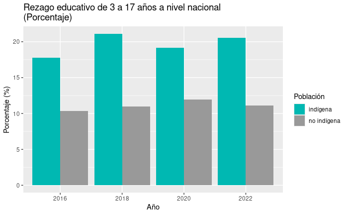
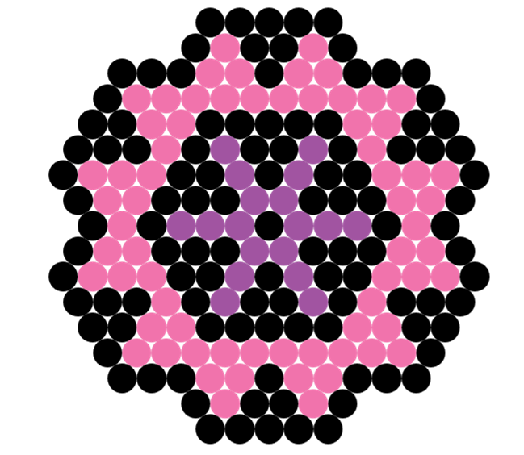
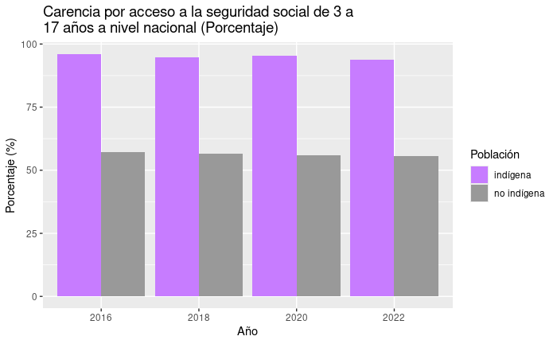
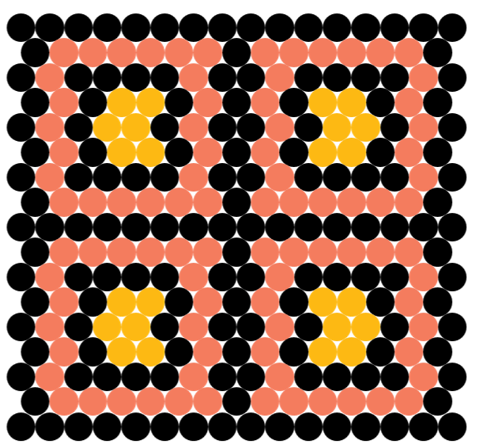
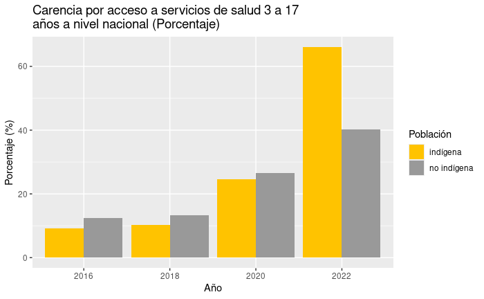
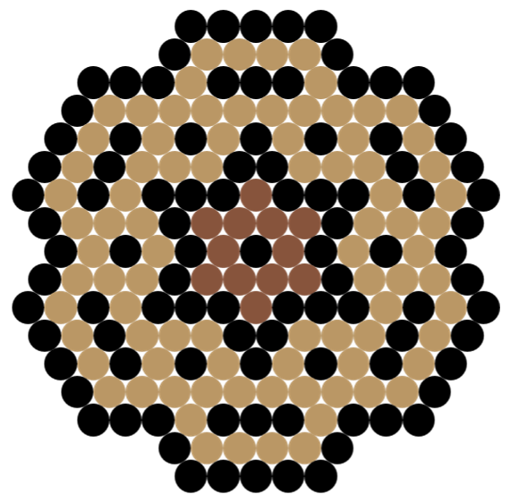
Población Indígena y No Indígena de 3 a 17 años en pobreza, pobreza extrema y con carencia alimenticia
- Izquierda: Las barras verdes representan a la población indígena, mientras que las barras grises representan a la población no indígena. En todos los años, la proporción de la población indígena viviendo en pobreza es consistentemente más alta
- Centro: Las barras de color naranja ilustran a la población indígena y las barras grises a la población no indígena. En todos los años, se observa que un porcentaje mayor de niños indígenas se encuentra en esta situación
- Derecha: Las barras de color rojo representan a la población indígena y las barras grises representan a la población no indígena. Entre 2016 y 2022, las barras indican que una mayor proporción de la población indígena experimenta esta carencia
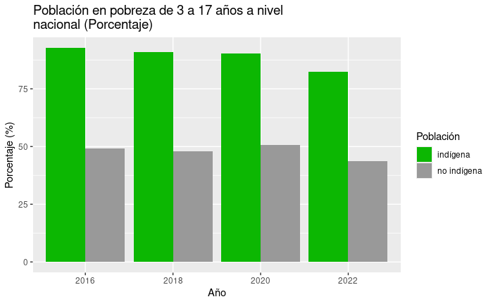
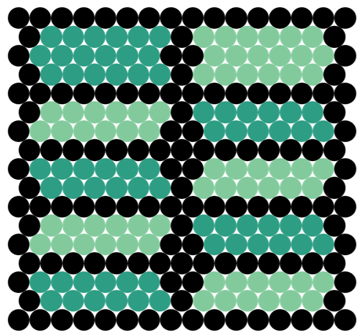
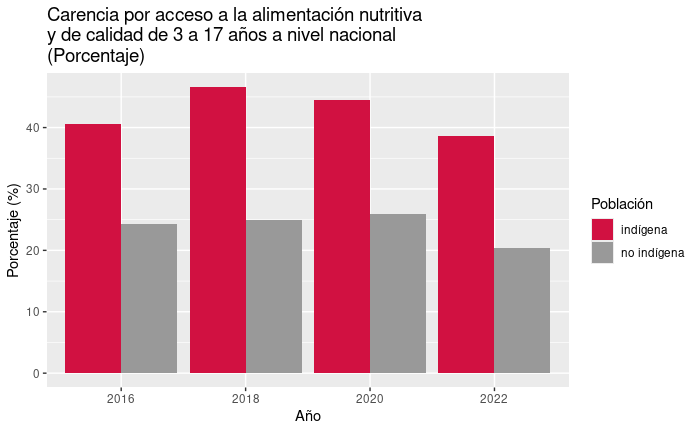
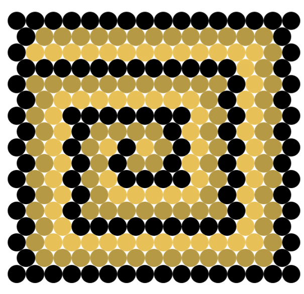
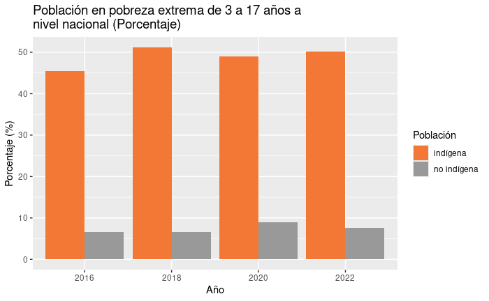
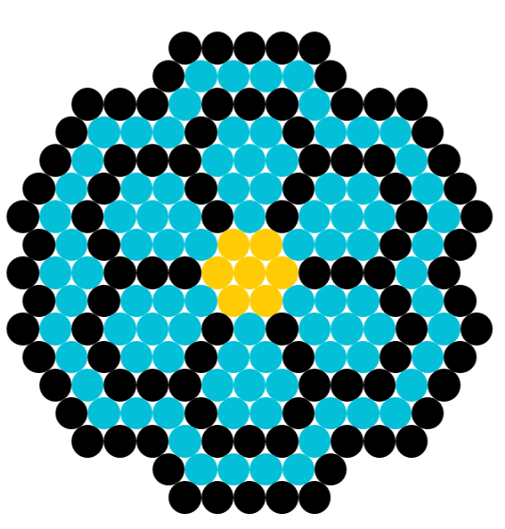
Carencia en calidad de vivienda y servicios básicos en población de 3 a 17 años
- Izquierda: Las barras rosadas representan la población indígena y las grises a la no indígena. Entre 2016 y 2022, las barras muestran consistentemente que un porcentaje más alto de niños indígenas viven en condiciones de vivienda menos adecuadas
- Derecha: Las barras azules representan a los niños indígenas y las grises a los niños no indígenas. Desde 2016 hasta 2022, se mantiene una brecha donde un mayor porcentaje de niños indígenas no tiene acceso a servicios esenciales como agua potable, electricidad y saneamiento
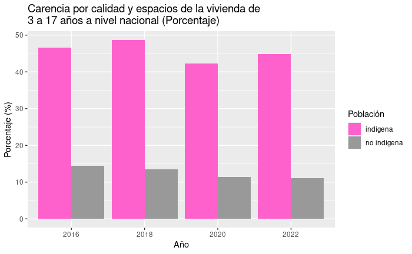
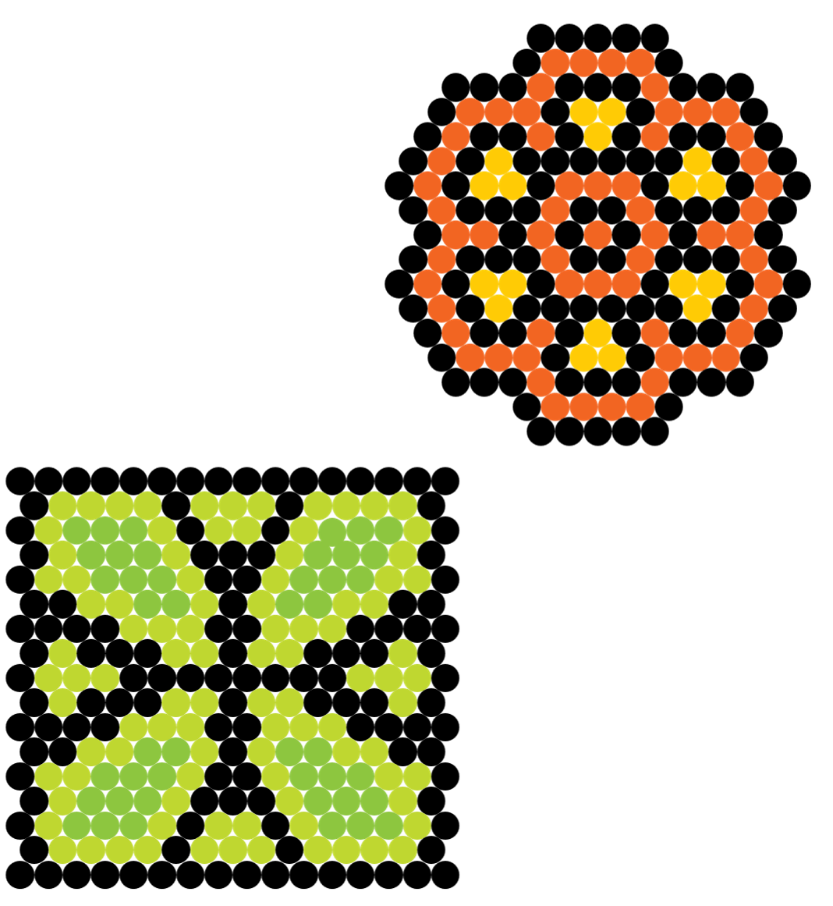
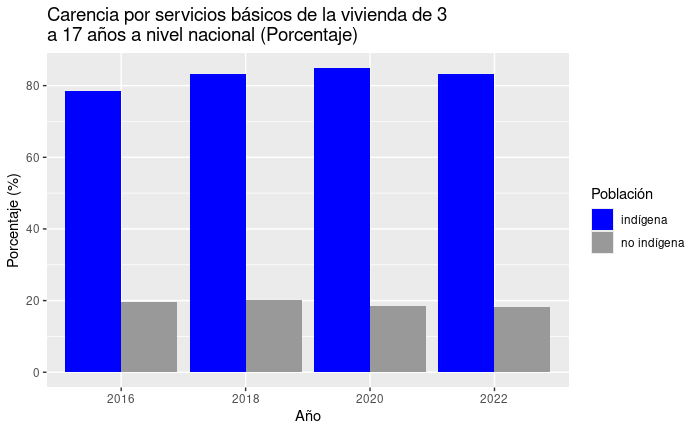